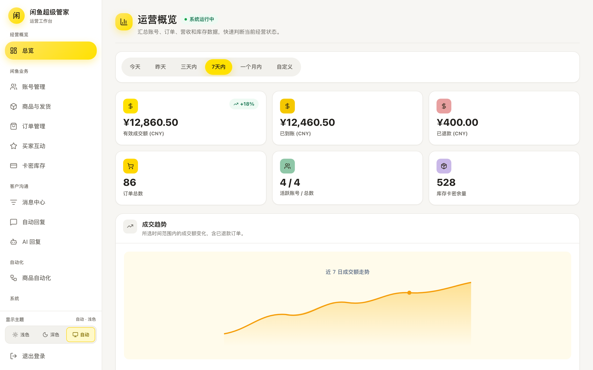
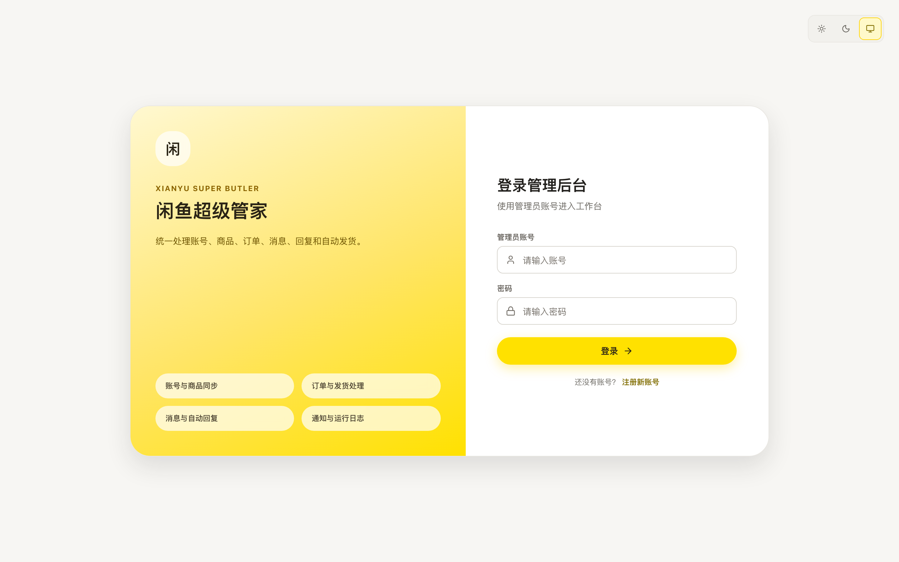
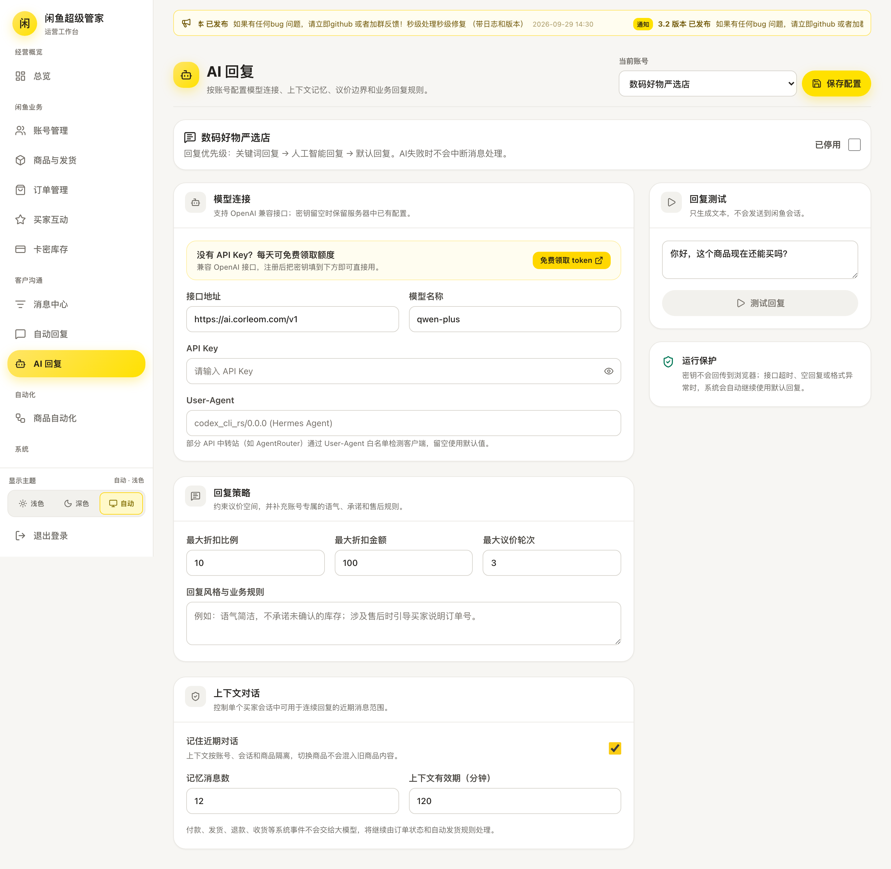
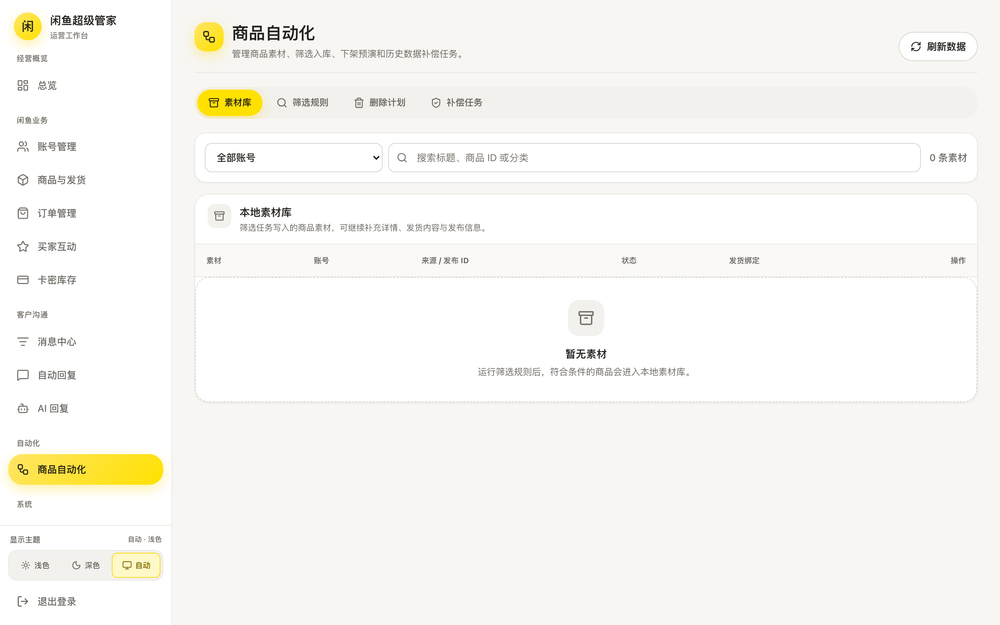

多账号自动回复 · 卡密自动发货 · AI 智能议价 · 经营数据看板
桌面版双击即用，服务器版 24 小时挂机 —— 两种版本，按需选择

基于开源项目「闲鱼超级管家」深度打磨，功能持续更新
咨询秒回不漏单，精确命中 + 兜底话术，按账号独立配置
兼容 OpenAI 接口，最低价、议价轮数、话术风格可控可调
文字 / 卡密 / 图片 / API 四种数据源，付款秒发货
异常订单先拦截再发，降低误发损失
确认收货自动好评、求小红花、致谢话术
定时擦亮 / 自动上下架，曝光不掉队
成交、退款、库存、商品排行一屏掌握
跨账号消息中心，回复决策有日志可查
核心功能完全一致，只是运行的位置不一样；数据都保存在你自己手里，随时可迁移
| 🖥️ 桌面版 | ☁️ 服务器版 | |
|---|---|---|
| 安装方式 | 双击安装，像装微信一样简单 | Docker 部署，提供指导 |
| 上手难度 | ⭐ 零基础即可 | ⭐⭐ 需一台服务器或 NAS |
| 在线时长 | 电脑开机期间在线 | 7×24 小时全天在线 |
| 远程管理 | 本机操作 | 手机 / 任意电脑浏览器 |
| 适合人群 | 个人卖家 · 新手起步 | 工作室 · 多号多店 |
| 数据位置 | 都保存在你自己的设备上，不经过第三方 | |
以下为真实界面（含演示数据），实际以最新版本为准



适合有服务器 / NAS 的卖家与工作室，电脑关机也不影响接单
支持群晖 / 极空间 NAS、云服务器 VPS、闲置电脑 / 软路由 · 数据库定时自动备份
# 拉取镜像并启动（也提供 docker-compose 编排与国内镜像加速） $ docker run -d --name xianyu-butler -p 8080:8080 \ -v ./data:/app/data -v ./logs:/app/logs \ ghcr.io/23star/xianyu-super-butler:latest # 启动后浏览器打开 http://服务器IP:8080 即可使用
全部免费 · 安装包内置浏览器内核 · 数据本地保存
首次打开提示：macOS 请「右键 → 打开」；Windows 若 SmartScreen 拦截，点「更多信息 → 仍要运行」
需要。管家管理的是你自己的闲鱼账号，首次使用用手机扫码授权登录即可，支持多个账号同时接入。
自动化操作存在平台风控风险，请自行评估并遵守平台规则；建议使用国内网络环境登录与运行，保持正常经营节奏。
AI 功能兼容 OpenAI 协议接口，密钥由你自行配置（可用任意兼容服务），密钥不会回传到浏览器之外。
桌面版保存在你电脑的用户目录，服务器版保存在你自己的服务器上；卸载重装不丢失，升级覆盖安装不影响数据。
本仓库的桌面版 / 服务器版安装包完全免费，跟随上游开源项目持续更新，可从 GitHub Releases 随时下载。
基于开源项目 xianyu-super-butler（AGPL-3.0）打包的桌面发行版，对源码的修改在仓库 README 中公开说明。